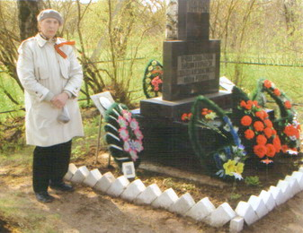
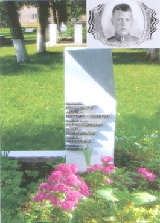

ВАШ СЫН, ОТЕЦ, БРАТ
(Окончание. Начало на первой полосе.)
НАШ ОТЕЦ
Наш отец старший лейтенант, командир роты Иванов Михаил Егорович, 1907 года рождения. Он умер от ран 13.03.44 года.
От отца долго не было писем и наша мама написала письмо начальнику штаба п/п 63509. Ответ пришел 6 мая 1944 г., где сообщалось, что наш отец 11.03.44 г. был ранен и эвакуирован в госпиталь на лечение. Дальнейшая судьба и место его нахождения неизвестны.
25 октября 1945г. мама получила извещение, где было написано, что наш отец умер от ран 13.03.44 г. и похоронен с отданием воинских почестей в Ленинградской обл., Карамышевский р-н, дер. Июдино.
Когда мама получила извещение, она обняла нас (троих детей) в кольцо и очень долго нас так и держала, не отпуская, плакала, причитала, как же мы будем жить без нашего родного отца, мужа. Мы долго не могли разжать ее руки и выйти из этого кольца.
Жизнь наша была очень тяжелой. Мама работала одна, а нас еще 3 детей (1935, 1937 и 1941 г.р.). Мама была истощена голодом, заболела, ее положили в больницу. Меня в 1946 году отдали в детский дом, брата в круглосуточный детсад. Сестра осталась дома одна. К ней приходила наша бабушка.
Когда мама вышла из больницы, то они жили вдвоем с сестрой, а брата брали из детсада на воскресенье.
В январе 1947 года, когда отменили карточки, мама меня взяла из детского сада, и мы стали жить опять все вместе.
В детдоме мне очень нравилось. Нас хорошо кормили, одевали. У нас были очень хорошие, добрые воспитатели. Работали кружки танцевальный, рисования, лепки. Нас учили пришивать пуговицы, делать петли, убираться в комнатах. Нас водили в кино, театры. Мы ездили в Артек, пионерлагерь Рагодино. Но мне почему-то все время хотелось домой. Хотя дома есть было нечего. Мама делила кусочек хлеба на всех, а свой прятала, чтобы вечером опять поделить его на всех. Варили суп из лебеды и крапивы, сныти. Делали оладьи из гнилой картошки, которую собирали осенью на полях. Ходили в лес за грибами, ягодами. Так вот и жили.
В 1950 году заболевает наш брат. Ребята играли во дворе дома. Отвязалась соседская коза. Они испугались и один из мальчиков замахнулся на козу молотком, а попал в голову моему брату. Через некоторое время брат заболевает эпилепсией. Он доучился до 6 класса. Потом по болезни был освобожден от учебы. Ему делали операции на голове, но болезнь продолжалась, и он в 1968 году умер. Сестра закончила МГУ, я вагоностроительный техникум, потом Политехнический институт.
Мама неоднократно писала в разные инстанции о подтверждении места захоронения отца, чтобы съездить на могилу. Но ответа так и не получала. В 1981 году она получила такой ответ, что Иванов Михаил Егорович захороненным на территории Псковской области не значится. Мама умерла в 1993 году.
Теперь я сама решила заняться поиском места захоронения моего отца.
Начала с военкомата. Затем обратилась в Фонд «Жить и Помнить», который есть в Твери. Там мне очень помогли в поисках места захоронения моего отца.
Я написала 5 писем в разные инстанции и получила подтверждение о месте захоронения нашего отца. В 1957 году отец был перезахоронен в братскую могилу в дер. Воронино Палкинского района Псковской области. Хочу выразить сердечную благодарность сотрудникам Фонда и всем, кто помог мне разыскать место захоронения моего отца.
Я созвонилась с администрацией Палкинского района и мне сообщили, что 7 мая 2010 г. на братском захоронении состоится митинг, посвященный 65-летию Победы в Великой Отечественной войне.
И вот 6 мая 2010 года мы с мужем поехали в Псков, затем в дер. Воронино, где похоронен наш отец. Братское захоронение представляет собой огороженную территорию 13,0 х 21,0 м, на которой стоит гранитный памятник. На этой территории захоронено 1461 военнослужащих. Имен захороненных нет. Списки захороненных находятся у администрации волости.
7 мая в 14 часов мы пошли в школу, где построились школьники, учителя, работники администрации, ветераны, мы с мужем, жители деревни. Шли пешком от школы до братского захоронения.
В 14.30 начался митинг. Выступали представители администрации, учителя, я, ветеран войны, школьники. После митинга в администрации собрались учителя, ветераны, жители, мы с мужем и нам устроили чаепитие. Мы все помянули погибших, которые защищали нашу Родину и благодаря которым живем мы и наши дети, внуки и правнуки.
Мы так благодарны всем, кто помог нам найти могилу отца, кто принял нас так сердечно, с любовью и добротой.
Спасибо Вам, низкий поклон и сердечная благодарность.
Вы дали нам возможность покланяться павшим, отдать земной поклон тем, кто не дожил до Победы.
Дочь, Чарцева Людмила Михайловна, г. Тверь.
Письмо ст. лейтенанта ИВАНОВА Михаила Егоровича
8.02.1944
Добрый день.
Здравствуйте горячо любимые мои родные. Очень жаль, что за период как я приехал из отпуска не получил от вас весточки. Теперь, вероятно, целый месяц не буду знать о вашей жизни, так как сегодня уезжаю к новому месту своей службы. О всей своей жизни, в каких бы трудных условиях мне не пришлось быть, я буду аккуратно писать.
Целую всех крепко крепко много раз.
Ваш папа Миша.
НАКАЗ МАТЕРИ!
Хочу в нескольких строках рассказать о своем дяде Уварове Владимире Ивановиче. Я не видел его живым, потому что он погиб защищая Родину в 1944 году в Белоруссии.
Знал я дядю только по рассказам бабушки и мамы. Они говорили, что он любил ловить птичек, приносил их домой, они пели, щебетали, потом он их выпускал на улицу. Так же он занимался фотографией. Бабушка говорила, что он залезал в подвал, где хранят картошку, и там делал с рамок фото. Одна фотография до сих пор хранится у нас. Это фото бабушки и дедушки. Мама так же говорила, что он очень хорошо рисовал. Дома висели портреты Ленина, Сталина, Калинина и зарисовки природы. Всегда обращался к бабушке только на «Вы». Он погиб и был захоронен сначала в другом месте, где находится его могила сейчас. Мама очень хотела побывать на могиле брата но, увы, неточность места первого захоронения тормозило нашу поездку. Военкоматы не давали конкретного адреса или не знали. Одним словом мама умерла, так и не побывав на могиле брата. Но перед тем как уйти она наказала мне найти и побывать в том месте, где захоронен дядя Володя. И тут, Слава Богу, я узнаю о Фонде «Жить и Помнить». Меня очень внимательно выслушали и в течение часа нашли действительное место захоронения дяди Володи. Братская могила находится в гор. Городок Витебской области, Республика Беларусь.
В 2009 году мы с супругой поехали на место захоронения. В Белоруссии встретили нас отлично, мы побывали на могилке, потом нас проводили в школу, которая шефствует над мемориалом. Они взяли для стенда о погибших воинах фотографию и копию последнего письма дяди Володи. Потом нас проводили в городской музей Воинской Славы. Там нам рассказали об истории города, о боевых действиях в их районе, о воинском мемориале. Одним словом отнеслись к нам вежливо, радушно, с уважением, поблагодарили за то, что мы предприняли эту поездку и побывали на месте захоронения нашего родственника.
Мы так же побывали в Белоруссии и в этом юбилейном году Победы. Встретили нас также хорошо, как и в прошлом году. Побывали на параде, возложении венков погибшим воинам. Одно можно сказать: в городе Городок помнят и чтят воинов погибших на их земле независимо от их национальности и вероисповедания. Оформление захоронения вызывает восхищение, очень много цветов, все сделано с любовью, там всегда чисто и аккуратно.
Огромное спасибо работникам Фонда «Жить и Помнить» за их очень нужную людям работу по сохранению памяти о павших воинах Великой Отечественной Войны. Огромное человеческое спасибо!
Вечная память воинам, погибшим за наши жизни.
Племянник, Разумев Владимир Михайлович, г. Тверь.
Из письма красноармейца 106 стрелкового полка 11 гвардейской Армии 1-го Прибалтийского фронта УВАРОВА В.И.
20/XII-43 г.
Здравствуйте дорогие родители, мама, и еще низко кланяюсь своим дорогим сестренкам Шурке и Нюрке. В первых строках моего письма сообщаю, что нахожусь в действующей армии и прошел немало боев, по сей день, по 20.12.1943 г. я остаюсь жив. Был я ранен в руку, ну ничего, пуля задела только мясо, ранен пониже локтя. Сейчас мама мы бьем немцев. О своих боях я писать не буду. Прошу не сердиться на меня, что я Вам не писал писем. Писем мне было писать некогда, причем и это письмо я пишу в сосновом лесу. Фрицев я со своего автомата побил немало. Живу сейчас очень в трудных условиях. Сейчас зима, а я не видал ни разу теплого угла, спим на снегу у костра, находимся то в бою, то на марше. Много моих товарищей зарыто в землю, после каждого боя есть убитые и раненые. Я, мама, за свой подвиг представлен к правительственной награде. Пока здоровье ничего, только бы не нагнала вражеская пуля.
За тем до свидания, ваш сын Володя. |